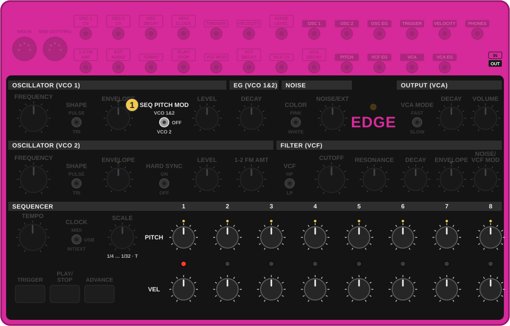
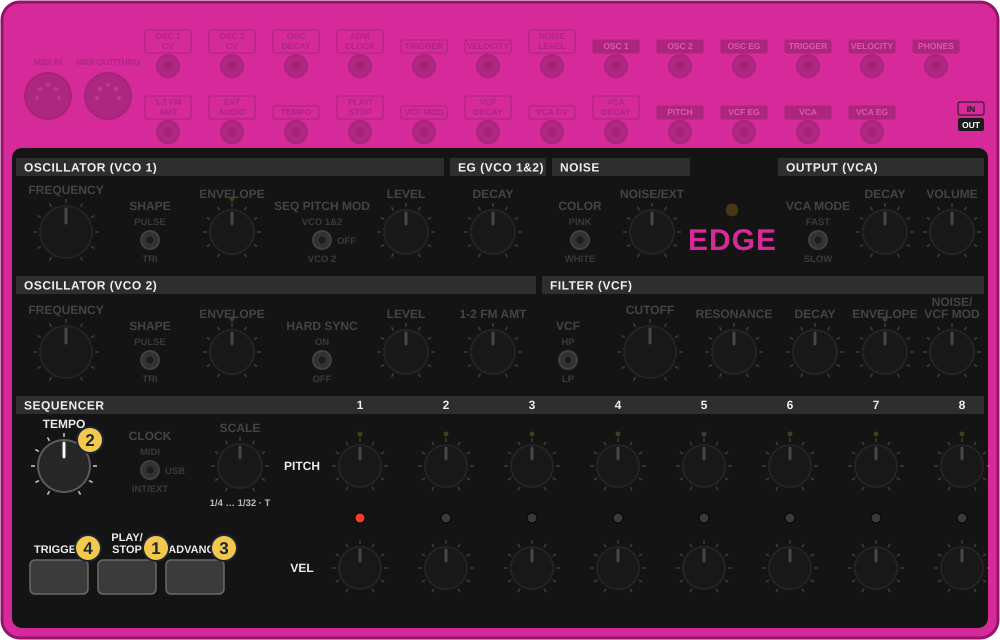
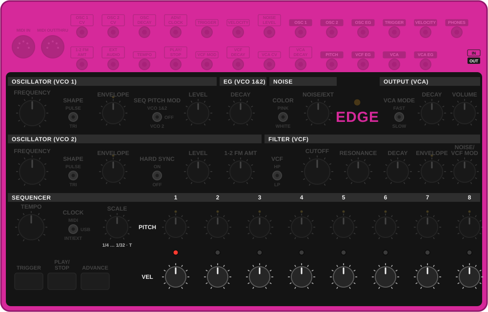
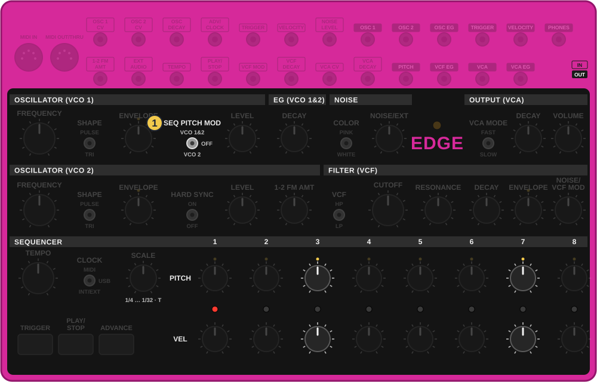
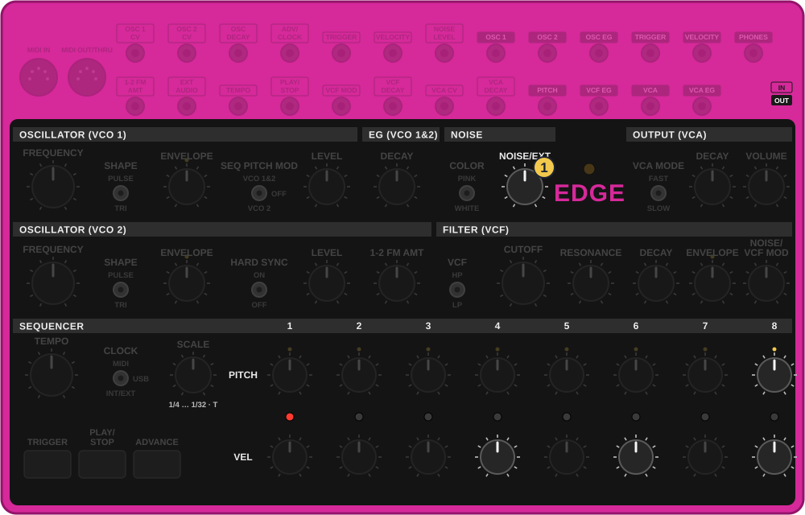
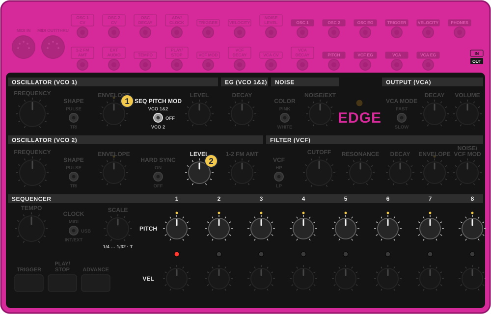
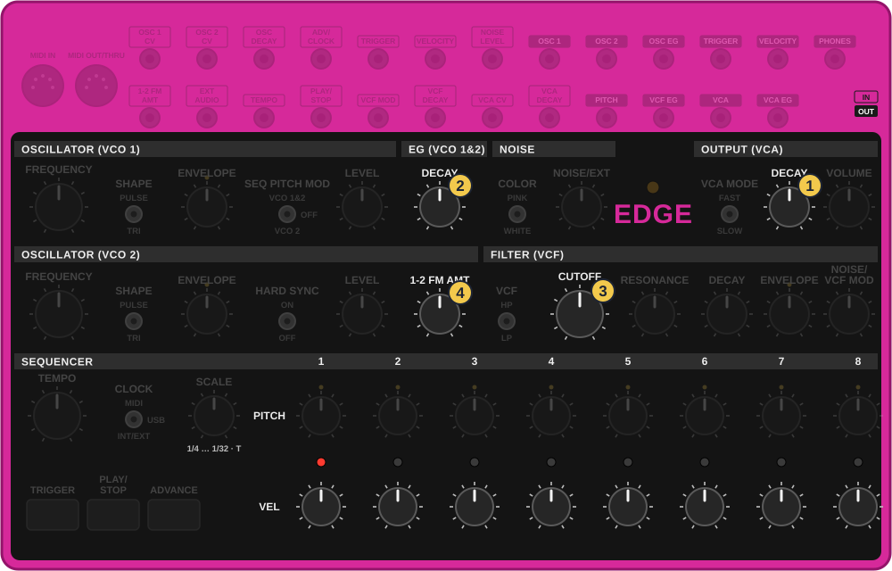
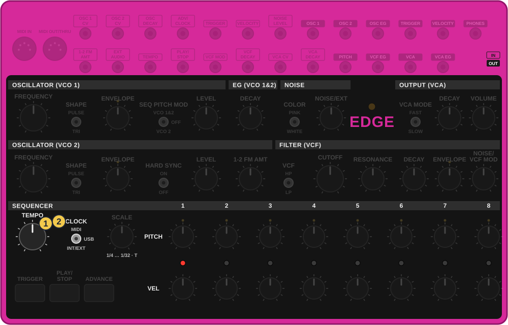

איך לקרוא כל כרטיס
- מתחילים כש: השורה הצהובה. ״הבית״ הוא הקיק משיעור 1.
- הסימנים: ✋החזק 👆לחץ ⟳סובב 🖐שחרר.
- VEL 3 הוא כפתור העוצמה של צעד 3, בשורה התחתונה. PITCH 3 הוא הכפתור שמעליו.
- המספרים בטבלאות הם שעות בשעון. 0 זה עד הסוף שמאלה.
שמונה צעדים, ולכל צעד שני כפתורים: עוצמה וגובה. אין כאן הקלטה: הקצב הוא מיקום הכפתורים. שלוש מנות קצרות: איך זה עובד, בונים קצב, וידיים על הקצב. בסוף כל אחת תרגול ידיים על התרשים.
האדג׳ מנגן צליל אחד בכל רגע. מה שהופך אותו למכונת תופים: כל צעד מקבל גובה ועוצמה משלו. צעד נמוך וחזק הוא קיק, צעד גבוה וחלש הוא טיק. אותו צליל, שמונה תפקידים.

תרשים מצויר לפי צילום של האדג׳ והמדריך הרשמי, לא צילום
אפשר לגעת בתמונה כדי להגדיל.
| שורה | מה היא עושה |
|---|---|
| VEL, למטה | העוצמה של הצעד. עד הסוף שמאלה, הצעד שותק. ככל שמסובבים ימינה, המכה חזקה יותר וגם ארוכה יותר, כי העוצמה משנה גם את הדעיכות. |
| PITCH, למעלה | הגובה של הצעד. שעה 12 היא ״כלום״, ימינה גבוה, שמאלה נמוך. עובדת רק כשהמתג SEQ PITCH MOD לא על OFF. |
הגובה לא נעול על תווים. הכפתור זז חלק, ולכן ״מנגינה״ כאן מכוונים לפי האוזן. בתופים זה יתרון: כל טום יכול לשבת בדיוק איפה שנעים.
תיבה רגילה היא 16 צעדים קטנים, כמו בטי־8. באדג׳ יש 8, ולכן כשכל צעד הוא צעד קטן כזה, 8 הצעדים חוזרים פעמיים בכל תיבה.
| צעד באדג׳ | 1 | 2 | 3 | 4 | 5 | 6 | 7 | 8 |
|---|---|---|---|---|---|---|---|---|
| מה זה | פעמה | אוף־ביט | פעמה | אוף־ביט |
צעדים 1 ו־5 הם הפעמות, שם הקיק. 3 ו־7 הם האוף־ביט, שם היי־האט פתוח של טרנס. 2, 4, 6, 8 הם הרווחים הקטנים, למכות רפאים.

תרשים מצויר לפי צילום של האדג׳ והמדריך הרשמי, לא צילום
אפשר לגעת בתמונה כדי להגדיל.
זו הדרך לכוונן צעד: עוצרים, ADVANCE עד הצעד, TRIGGER, ומסובבים את שני הכפתורים שלו. 🔁 עובד על: כל אחד משמונת הצעדים.
הבאה: בונים קצב.

תרשים מצויר לפי צילום של האדג׳ והמדריך הרשמי, לא צילום
אפשר לגעת בתמונה כדי להגדיל.

תרשים מצויר לפי צילום של האדג׳ והמדריך הרשמי, לא צילום
אפשר לגעת בתמונה כדי להגדיל.
הגובה הגבוה הפך את הקיק לטום, והעוצמה הנמוכה קיצרה אותו. ככה נבנה כלי חדש בלי לגעת בצליל.

תרשים מצויר לפי צילום של האדג׳ והמדריך הרשמי, לא צילום
אפשר לגעת בתמונה כדי להגדיל.
| צעד | 1 | 2 | 3 | 4 | 5 | 6 | 7 | 8 |
|---|---|---|---|---|---|---|---|---|
| VEL | 2 | 0 | 12 | 0 | 2 | 0 | 12 | 10 |
| PITCH | 12 | 12 | 3 | 12 | 12 | 12 | 3 | 4 |
המספרים הם שעות בשעון. 0 זה עד הסוף שמאלה: צעד שותק.
הקצב הזה שווה צילום. האדג׳ לא שומר כלום, אז הצילום הוא השמירה.

תרשים מצויר לפי צילום של האדג׳ והמדריך הרשמי, לא צילום
אפשר לגעת בתמונה כדי להגדיל.
שלושת מצבי המתג: VCO 1&2 כל המכה זזה, טוב לתופים. VCO 2 הגוף נשאר והצלצול מנגן, טוב לקצב עם מנגינה. OFF כל הצעדים באותו גובה, ושורת הגובה פנויה לכבלים, בשיעור 4.
הבאה: ידיים על הקצב.

תרשים מצויר לפי צילום של האדג׳ והמדריך הרשמי, לא צילום
אפשר לגעת בתמונה כדי להגדיל.
| מה | איך |
|---|---|
| להוריד או להחזיר מכה | VEL של הצעד, שמאלה או ימינה |
| מקצר ומהודק לבום מתגלגל | DECAY (VCA) |
| מבום ללייזר | DECAY (EG) |
| עמום לפתוח, בילד | CUTOFF, לאט, לאורך כמה תיבות |
| מתכת שנכנסת לאט | 1-2 FM AMT, עם LEVEL (VCO 2) למעלה |

תרשים מצויר לפי צילום של האדג׳ והמדריך הרשמי, לא צילום
אפשר לגעת בתמונה כדי להגדיל.
כשהקצב בא ממכשיר אחר, TEMPO לא עובד. הטריק הזה רק כשהמתג CLOCK על INT/EXT.
הסיקוונסר מגיע עד 10,000 בדקה. בקצב כזה 8 הצעדים חוזרים מהר כל כך, שהאוזן שומעת אותם כגובה. זה צליל מוזר לרגע של מעבר או של שבירה.
זהו. הבא: הכבלים, ואחריהם ארגז הטריקים.